← 站主随笔 · 资本配置 · 分章阅读
资本配置：五条原则，看管理层会不会把钱花对地方 · 中英对照 · 第 2 / 9 章
评估资本配置，要从理解资本从哪里来、以及公司把钱花到哪里开始（见图 4）。
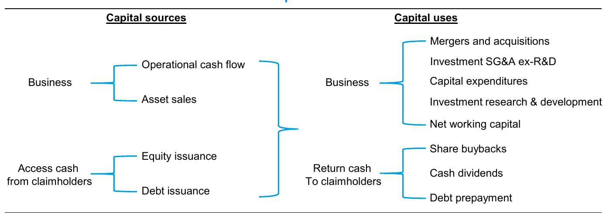
资本的来源可以是外部的，也可以是内部的。外部资本来自发行股权或债务（包括租赁）。初创公司和年轻公司通常需要获取外部资本，因为在能够以足够规模销售商品或服务、从而吸收这些前期生产费用之前，它们必须先发生并承担这些成本。股份支付（SBC）本身也是一种股权发行。
判断一家公司是否需要外部资本，一种方法是把它的税后净营业利润（NOPAT）增长率与其投入资本回报率（ROIC）作比较。无论年轻还是成熟，增长快于自身增量 ROIC 的公司都需要获取外部资本。如果公司的 ROIC 高于资本成本，这本身没问题，甚至是可取的。20
Firms, young or old, that grow faster than their incremental ROICs need to access external capital. This is fine, indeed desirable, if the company’s ROIC is in excess of the cost of capital.一个经典案例是全球零售商沃尔玛（Walmart）：在上市后的最初 15 年里，它的增长快于自身的 ROIC。关键在于，正因为它的 ROIC 远高于资本成本，这家公司创造了大量价值。尽管沃尔玛需要外部资本来支撑增长，其股票在此期间仍实现了 33% 的年化股东总回报（TSR），是同期标普 500 指数的三倍。
Even though Walmart required external capital to support its growth, the stock delivered an annual total shareholder return of 33 percent during that period, three times that of the S&P 500.内部资本来自业务自身产生的现金。这包括经营活动现金流和资产出售所得，后者实质上是把一串未来现金流一次性折成今天的总额。当增长低于 ROIC 时，公司就会有资金可以返还给股东，或补充进资产负债表。
图 5 显示了 1970 年以来美国公司的资本来源。内部融资一直是主要来源。公司也持续增加新债，只有在经济处于衰退的若干年份例外。这种发行方式与稳定的资本结构相符。
该图还显示，公司平均而言是在净回购股权。请注意，这项分析不包括以股份支付形式进行的股权发行。但即使把 SBC 费用考虑在内，股权净发行额仍为负。21
But net equity issuance is negative even after taking SBC expense into consideration.内部融资承担了很高比例的投资资金，这既可以看作好事，也可以看作坏事。好的一面是，美国上市公司的 ROIC 足够高，几乎不需要求助于资本市场来为增长融资。坏的一面是，公司可以把内部经营产生的资金投向毁损股东价值的投资。从资本市场筹资则意味着公司的支出计划会受到审视。事实上，证据显示健康的资本市场能够改善资本配置。22
In fact, the evidence shows that healthy capital markets improve capital allocation.著名的经济学家、金融史学家彼得·伯恩斯坦（Peter Bernstein）提出过一个思想实验：让公司把全部盈利都分配给股东，然后再向市场募集投资资金。他的逻辑是：既然市场比公司更擅长配置资本，那么经过这道关卡，整体的资本配置就会得到改善。23
债务占总资本比率是衡量资本结构——也就是公司如何为经营融资——的指标。图 6 显示了 1970 至 2024 年美国公司（不含金融行业）的这一比率。我们把它定义为债务的账面价值，除以债务的账面价值加上股权的市值。2024 年该比率为 15%，而长期平均为 26%，并在 2025 年上半年继续走低。请注意，尽管这一时期利率总体下行，资本结构反而变得更加保守。例如，美国 10 年期国债收益率在 20 世纪 70 年代的年均值为 7.5%，而过去 10 年的平均值为 2.5%。
That ratio for 2024 was 15 percent versus the long-term average of 26 percent, and it continued to trend lower in the first half of 2025.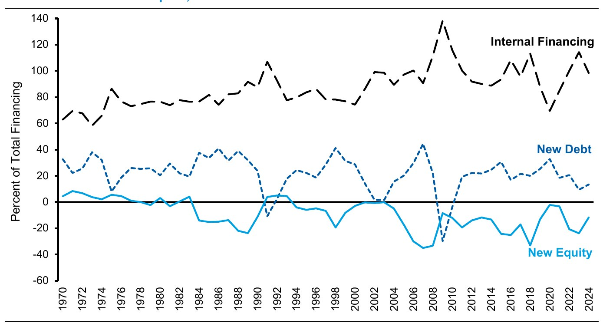
公司使用资本，要么投向业务本身，要么为索取权人（claimholders）提供回报。对业务内部的投资包括资本开支（capex）、营运资本、研发（R&D）投资，以及剔除研发后的销售、一般及行政费用（SG&A）投资（属于无形资产投资）。公司也可以进行并购（M&A）等外部投资。区分两类支出很重要：一类是为了追求创造价值的增长而自主决定的现金支出，另一类是维持当前经营所必需的支出。24
图 7 显示了 2024 年美国公司如何配置资本，既以绝对金额计，也以占销售额的百分比计。总支出为 US$7.5 万亿。其中 US$0.3 万亿的资产剥离已包含在并购金额中。
Total spending was $7.5 trillion. Divestitures of $0.3 trillion are included in the M&A amount.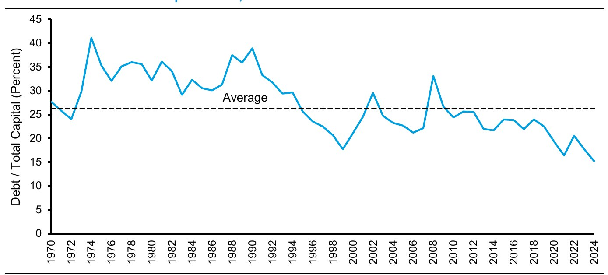
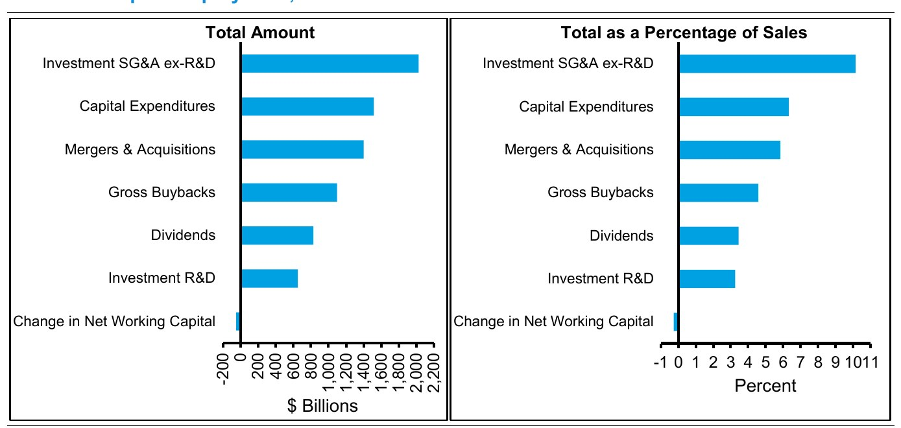
图 8 显示了 1970 年以来按来源划分的支出情况。数据揭示出一些值得注意的模式：
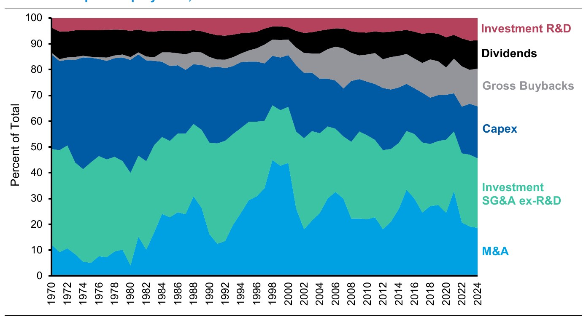
图 10 显示了标普 500（S&P 500）指数行业构成的变迁，该指数追踪美国最大的 500 家上市公司的市值。这些变化有助于解释，为什么今天公司配置资本的方式与几十年前不同。在这段时期内，信息技术、医疗保健和通信服务在市场中的占比翻了一番，从 1970 年的 26% 升至 2024 年的 52%。与此同时，工业、能源和原材料的占比下降超过一半，从 30% 降至指数的 13%（见图 11）。从有形投资向无形投资的结构变化，与行业构成的这一演变相互吻合。
Information technology, healthcare, and communication services doubled as a share of the market over this period, from 26 percent in 1970 to 52 percent in 2024.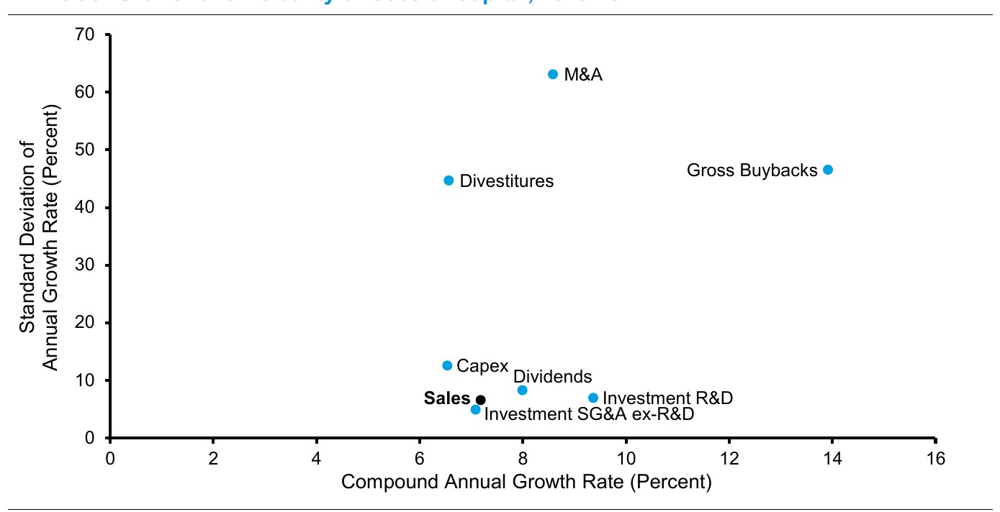
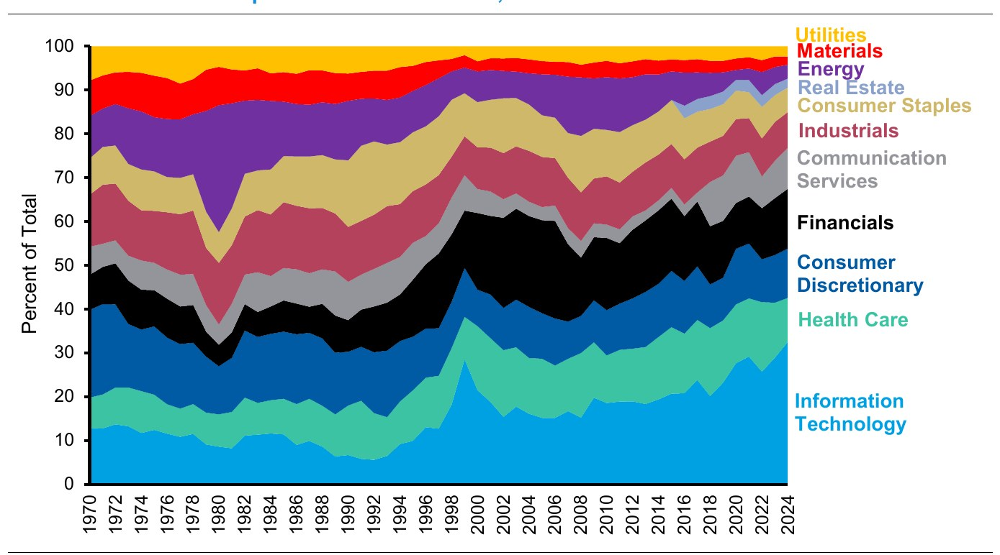
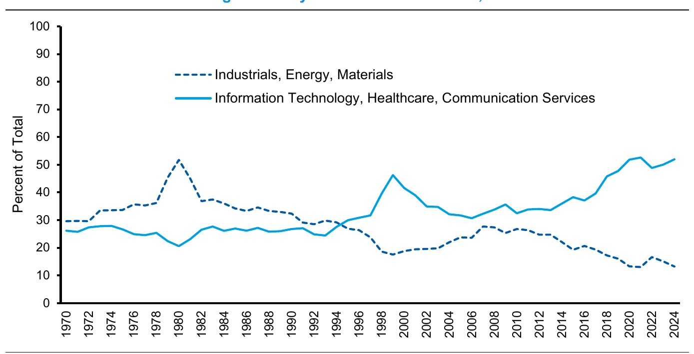
资本配置之所以是一个重要的投资议题，是因为上市公司的整体 ROIC 超过了整体增长率。这意味着美国上市公司创造的现金多于其投入的现金。经内部生成的无形资产调整后，1970 至 2024 年的平均 ROIC 为 9.2%（见图 12）。同样经无形资产投资调整后，NOPAT 的平均增长率为 7.9%。
The average ROIC, adjusted for internally-generated intangible assets, was 9.2 percent from 1970 through 2024 (see exhibit 12). The average growth rate in NOPAT, also adjusted for intangible investment, was 7.9 percent.图 13 显示，经通胀调整后，投入资本的平均增长率为 4.3%，该数字基于过去 3 年的年化增长率（滚动三年年化增长率）。我们对投入资本的定义剔除了超额现金。自 1970 年以来，包含回购和股息在内的整体投资以 7.5% 的速度增长。
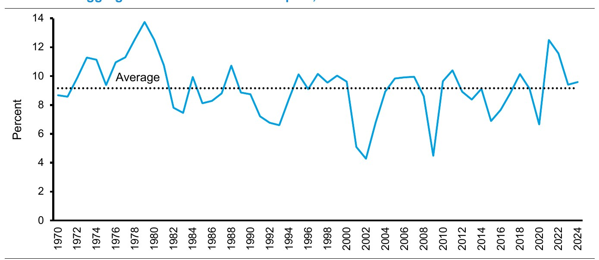
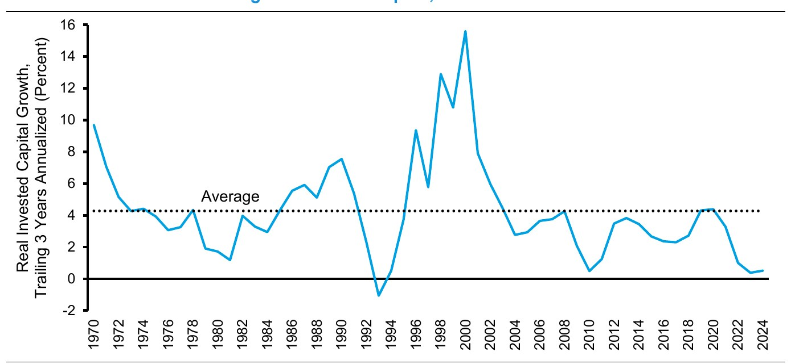
超额现金的生成与行业构成的变化叠加，导致现金和短期（ST）投资的余额上升。27 图 14 显示了我们对美国公司超额现金及短期投资占资产总额百分比的估计。1970 至 2024 年的平均值为 5.8%，2024 年为 7.5%。
The average was 5.8 percent from 1970 to 2024 and was 7.5 percent in 2024.这笔超额现金和短期投资中相当可观的一部分，集中在少数几家公司手里，包括苹果（Apple）、字母表（Alphabet）和微软（Microsoft）。截至 2024 年末，各公司报告显示，这笔资金总额的四分之一由 10 家公司持有，三分之一由前 21 家公司持有，一半由 67 家公司持有。
As of year-end 2024, company reports show that one-quarter of the total was held by 10 companies, one-third by the top 21, and one-half by 67 firms.投资者需要考虑这些公司将如何使用这些超额资金。虽然这笔现金并不能赚取资本的机会成本，但它可以在融资环境困难时提供缓冲，并且在出现有吸引力的机会时可能具有期权价值。
下面我们逐一讨论资本配置的各项备选方案。
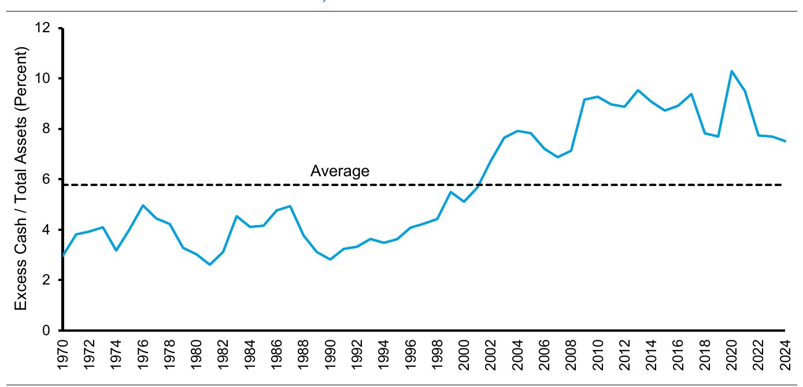